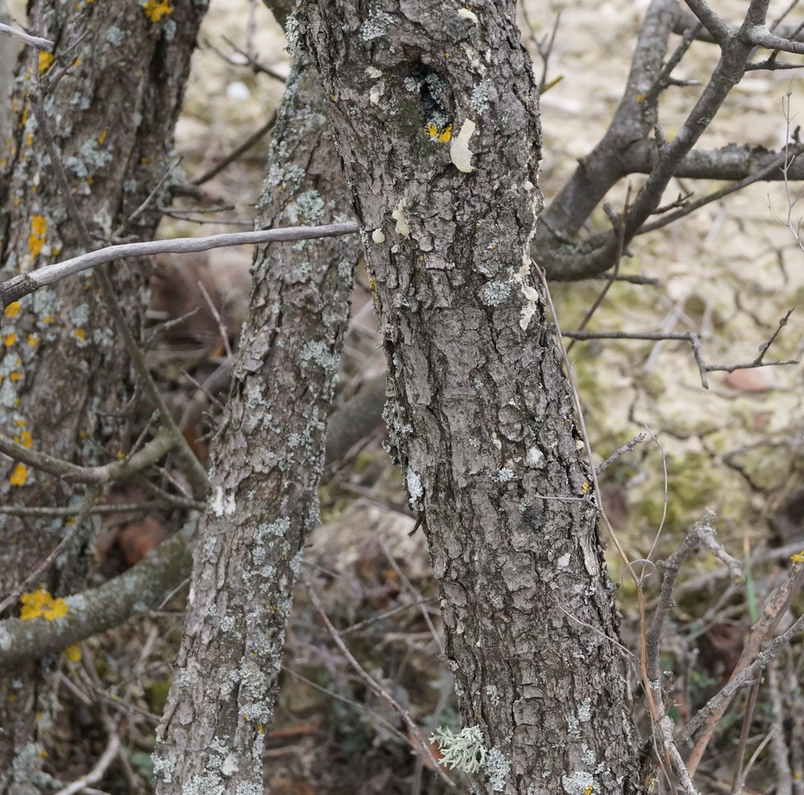

农作物与经济植物 · 植物界
开心果 Pistacia vera

开心果是漆树科落叶小乔木，果实为核果，种仁翠绿香脆，富含油脂和蛋白质，可炒食或制糕点，是受欢迎的坚果。
- 分类
- 门被子植物门纲双子叶植物纲目无患子目科漆树科属黄连木属
- 栖息环境
- 干旱温带丘陵，喜光、耐旱、耐寒
- 地理分布
- 原产中亚与西亚，主产于伊朗、美国与中国新疆
- 保护级别
- 暂无评估（栽培作物）
物种志
开心果是漆树科落叶小乔木，株高 5–10 m，树皮灰褐色，叶片羽状复叶，小叶 3–5 枚，卵形，革质。花小，无花瓣，雌雄异株，先于叶开放，树体寿命长，结果期可达数十年。果实为核果，椭圆形，外果皮成熟时由绿转红，内果皮坚硬，成熟后自然开裂，露出绿色种仁。
开心果原产中亚与西亚干旱地区，伊朗、土耳其一带栽培历史悠久，后传入地中海和美洲。它喜干燥、光照充足，耐旱耐寒，适宜在排水良好的沙壤土生长，需冬季低温休眠。果实成熟后外壳开裂，采收后去外皮、烘干。种仁可炒食、盐焗、制糕点；树皮可提取树脂。美国加州、伊朗和中国新疆是主产区，种仁外覆紫红色薄皮，烘烤后香气更浓。
形态与习性
- 株高5–10 m，落叶小乔木
- 叶羽状复叶，小叶 3–5 枚
- 花雌雄异株，无花瓣
- 果实核果，成熟后开裂
- 种仁翠绿，富含油脂
- 用途炒食、糕点与盐焗
趣味知识
- 开心果成熟时外壳会自然裂开，露出绿色种仁。
- 开心果雌雄异株，果园需要配置授粉树。
- 开心果原产中亚干旱地区，伊朗栽培历史十分悠久。